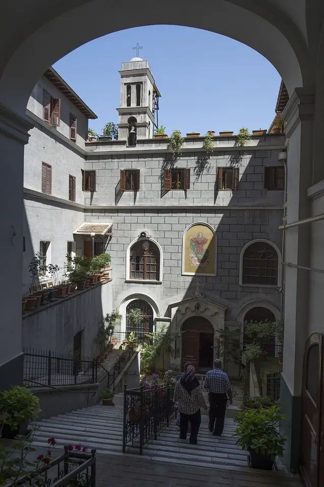

Kiliseler, Mezarlıklar ve II. Jean Paul
Santa Maria Draperis Kilisesi
1909'da Türkler ve Polonyalılar burada, Kırım Savaşı'nda ölen Polonyalı gönüllüler için birlikte dua etti; ayine sonradan son halife olacak Abdülmecid Efendi bile katıldı.


- Semt
- Beyoğlu
- Dönem
- 1909
- Ziyaret
- Ziyarete açık
Hikâye
1909 yazında bu kiliseden, Polonya basınına göre İstanbul'un daha önce görmediği bir tören alayı yola çıktı: Türkler ve Polonyalılar, iki milletin bayraklarıyla, Mickiewicz'in öldüğü eve birlikte yürüdüler.
Santa Maria Draperis, şehrin en eski Katolik parokyalarından biri. Fransiskenler 1584'te Galata'ya taşındılar; Levanten bir kadın, Clara Maria Draperis, onlara küçük bir şapeli ve ahşap bir Meryem ikonası olan evini bağışladı. 1678'de Pera'da bir kilise inşa ettiler; kilise defalarca yandı ve yıkıldı, ama ikona her seferinde kurtarıldı ve bugün hâlâ ana sunağı süslüyor. Kilise cadde seviyesinin altında, dik bir merdivenle inilen bir yerde.
1908 Jön Türk Devrimi'nden sonra İttihat ve Terakki Cemiyeti, İstanbul'da Seyfeddin adıyla tanınan Polonyalı Tadeusz Gasztowtt'un girişimiyle, Kırım Savaşı'nda Osmanlı saflarında ölen Polonyalı gönüllüleri ve Mickiewicz'i anmaya karar verdi. Polonya göçmen basınının yazdığına göre Santa Maria Draperis'teki ayine aralarında bir imamın da bulunduğu çok sayıda Müslüman katıldı. Davetliler arasında cemiyetin önde gelenleri, Kırım gazileri, sonradan son halife olacak Abdülmecid Efendi ve Polonezköy'den (Adampol) bir heyet vardı.
Ardından Leh ve Osmanlı sancaklarıyla bir alay Mickiewicz'in evine gitti. “Şair ve büyük Polonya vatanseveri Adam Mickiewicz, Türklerin dostu” yazılı bir levha açıldı (bugüne ulaşmadı), cemiyet adına Selahaddin Bey konuştu, kurban kesildi ve şairin portreleri dağıtıldı. Tarih konusunda kaynaklar ayrılıyor: levhada 10 Temmuz 1909 yazıyordu, yeni bir araştırma ise 17 Ağustos diyor. Polonya basını, ülkenin paylaşılmasından bu yana Polonya onuruna böyle bir tören görülmediğini yazdı; üstelik Polonya o sırada haritada bile yoktu.


Nasıl gezilir
Giriş, İstiklal Caddesi 215 numarada, nişinde Meryem heykeli olan kapıdandır; ardından dik merdivenlerle kiliseye inilir. Kiliseyi Fransiskenler yönetiyor, ayinler çoğunlukla İtalyanca; güncel saatleri girişteki panodan kontrol edin. Mickiewicz Müzesi buradan yaklaşık 1 km: İstiklal'den Taksim yönüne yürüyüp batıya, Tarlabaşı Bulvarı'nın karşısına geçin. 1909'daki alayın tam güzergâhı bilinmiyor.
Kişiler
- Tadeusz Gasztowtt (Seyfeddin)
- Abdülmecid Efendi
- Selahaddin Bey
- Marcin Ratyński
- Clara Maria Draperis
Konum
Beyoğlu, İstanbul · Koordinatlar: 41.03010, 28.97615